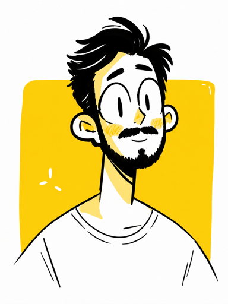
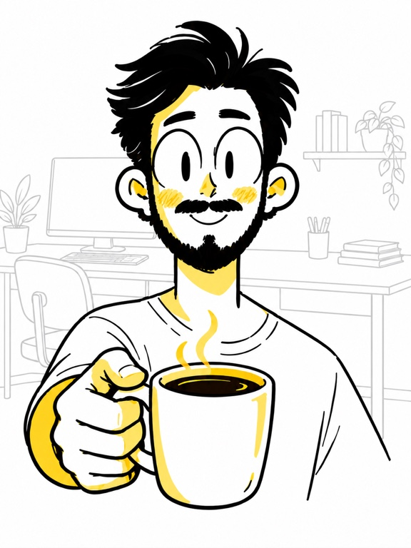

Hi,

I’m Sanjith!I’m a product designer creating people-centered experiences that fit daily life and make information easier to find, understand, and use. I turn complex needs into clear, intuitive products that feel natural from the first interaction.
Case Studies

Mobile App Design and Research
Drexel Works
A mobile app helping Drexel students find eligible campus jobs and track applications in one place.
View case study


UX Research & Mobile App
GLOWM: A Clearer Record of Care
Research-led workflow improvements helping midwives find patient records, review previous care, and record visits more clearly.
View case studyAbout Me
I’m Sanjith, a product designer focused on understanding how people think, move through tasks, and use technology in everyday life. I turn those insights into clear flows, thoughtful interactions, and digital products that feel natural to use.

I enjoy working through complex problems, asking the right questions, and shaping ideas from early research into polished experiences. My goal is to make useful information easy to find and every interaction easy to understand.
I’m always learning and refining my craft. I’m excited to collaborate with people who care about building practical, inclusive products that become a helpful part of daily life.